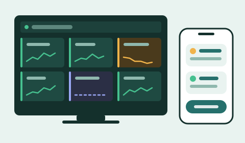
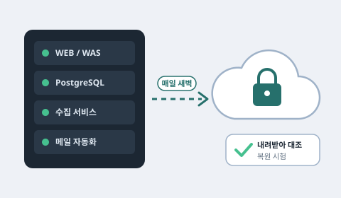
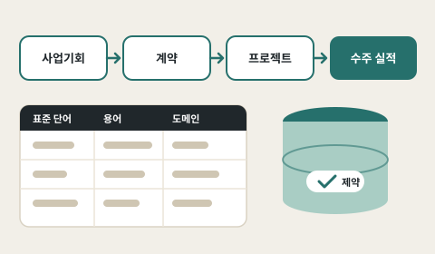
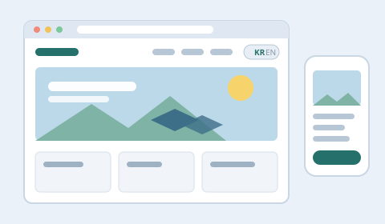
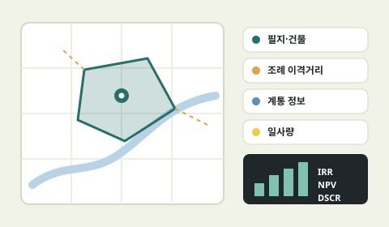
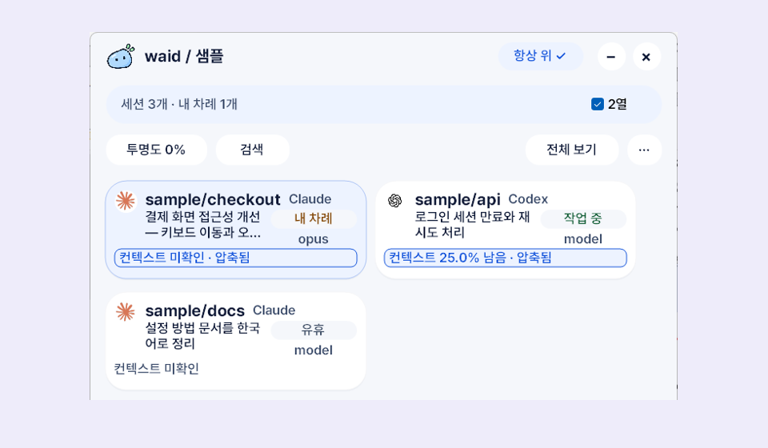

업무 자동화
메일·엑셀로 돌던 월간 실적 업무를 요청부터 DB 적재까지 자동화
2026.07 - 현재
에너지 기업 · 선임
사내 시스템 개발·운영, 관제·실적 자동화, 서버 운영
2024.04 - 2026.06
IT 서비스 기업(분할 신설 법인) · 주임
ERP 구축 SI, 에너지 계열사 시스템 개발·연동
2023.12 - 2025.09
IT 서비스 기업 · 사원
ERP 구축 SI, 총무 모듈 개발
물적분할 후 프로젝트 소속 유지로 두 법인에 동시 재적. 2026.07 그룹 내 에너지 계열사로 전배.
메일·엑셀로 돌던 월간 실적 업무를 요청부터 DB 적재까지 자동화
Linux 서버의 서비스·백업 운영, 관제 알림 기준을 로그로 다듬기
표준 사전·명명 규칙과 DB 제약으로 입력 경로와 상관없이 같은 결과

Project 01발전소 통합관제·업무 자동화O&M 사용 중
Project 02업무 서버 운영·백업운영 중
Project 03사내 ERP·업무시스템개발·운영
Project 04AI 활용 웹사이트 구축내부 검토 시안
Project 05주소 기반 사업성 사전 검토개발 중
Project 06WAID · AI 세션 관리 도구개인 · v0.2.0Project 01
주요역할 및 기능
Project 02
주요역할 및 기능
디스크 사용률 96% → 73%systemd 자동 재시작복원 시험·재점검
Project 03
주요역할 및 기능
Project 04
주요역할 및 기능
Project 05
주요역할 및 기능
Project 06 개인 프로젝트

주요역할 및 기능